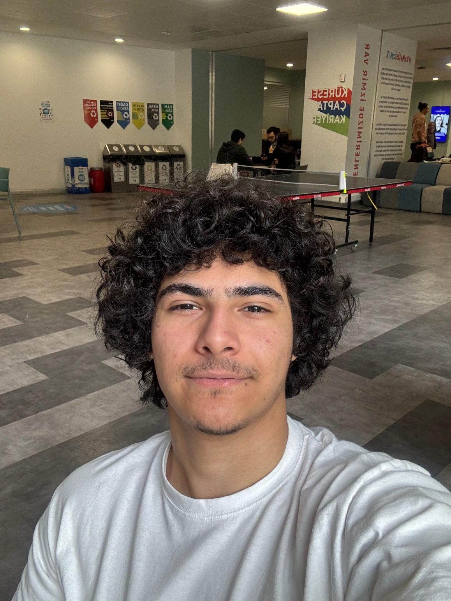
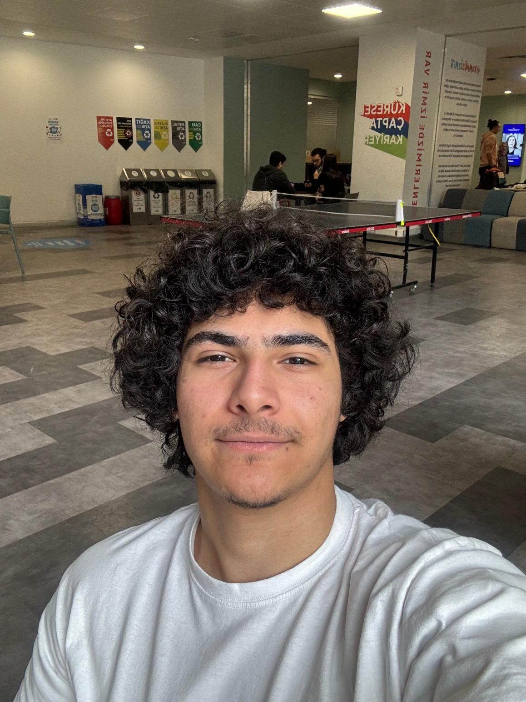

Ben Tuğrul Yadaş. Ekonomi Üniversitesi'nde ikinci sınıf Bilgisayar Programcılığı öğrencisiyim. Lise yıllarımdan beri yazılıma büyük bir ilgim var ve olabildiğince fazla deneyim kazanmaya çalıştım. Bu alana olan ilgim oldukça derin ve yeni programlama dilleri öğrenmeye ve kendimi sürekli geliştirmeye büyük bir tutku duyuyorum.
Tecrübelerim
Elektirik Tesisatı
- Haziran 2018- Ağustos 2018
Bir binanın elektrik sisteminin genel çalışma prensiplerini, bağlantı düzenlerini ve kablolama yöntemlerini baştan sona öğrendim. Konut tipi yapılarda priz, anahtar,sigorta kutusu gibi bağlantı noktalarını tanımlayabiliyor; meydana gelen arızaları tespit edip çözüm üretebiliyorum.
-
Web Sitesi Yönetimi
- Temmuz 2024 - Eylül 2024
Kendi alanımla ilgili ilk freelance projemde, bir öğrenci yurdunun tanıtım ve bilgilendirme amaçlı web sitesini tasarladım. Kullanıcı dostu arayüz, mobil uyumluluk ve temel içerik yönetimi özellikleriyle modern bir site oluşturdum. Proje sürecinde müşteri iletişimi, ihtiyaç analizi ve teslim sonrası destek konularında da aktif rol aldım.
-
Danışmanlık Hizmetleri
- Haziran 2017 - Temmuz 2021
Bir hasar danışmanlık ofisinde, kaza geçirmiş bireylerin tazminat alma süreçlerinde uzman olarak görev aldım. Müşterilerin hak ettikleri tazminatları alabilmesi için gerekli belgelerin toplanması, başvuruların yapılması ve sürecin takibi konularında çalıştım. İşleyişi baştan sona öğrendim, tüm süreçlere hâkimim ve çözüm odaklı yaklaşımım sayesinde verimli bir şekilde sonuç aldım.
Oyun Geliştirici
- Nisan 2022 - Haziran 2024
Kendi ekibimle birlikte oyun geliştirme süreçlerinde aktif olarak yer aldım. Bu süreçte önemli bir deneyim kazandım. Takım çalışması, yaratıcı problem çözme ve projelerin geliştirilmesi gibi alanlarda büyük bir katkı sağladım. Bu deneyimim, hem kişisel gelişimime hem de teknik bilgi birikimime önemli ölçüde katkıda bulundu.
Gönüllülük Projelerim
Mentör – İzmir Ekonomi Üniversitesi
- Eylül 2024 – Ocak 2025
Bireysel mentee ihtiyaçlarına göre uyarlanmış mentorluk tarzı, herkese uygun yaklaştım. Mentee ilerlemesine yardımcı geri bildirimde bulundum, becerilerini geliştirmelerine ve potansiyellerini artırmalarına odaklandım. Mentee performansını, kişiselleştirilmiş rehberlik ve destek sağlayarak artırdım. Zorluklar karşısında başarı odaklı, rehberlik yapıtım ve başa çıkma mekanizmaları önerdim.
 
